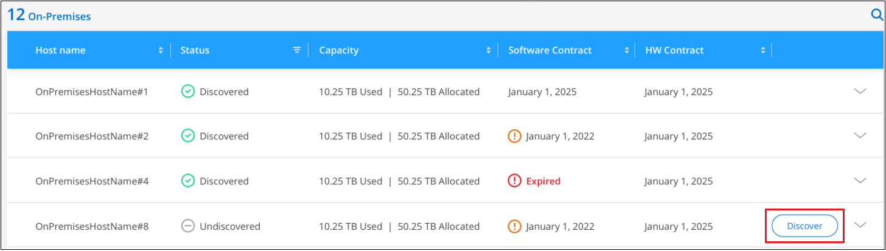
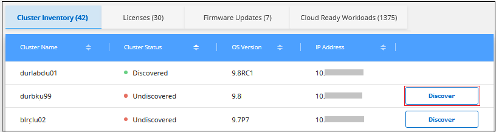
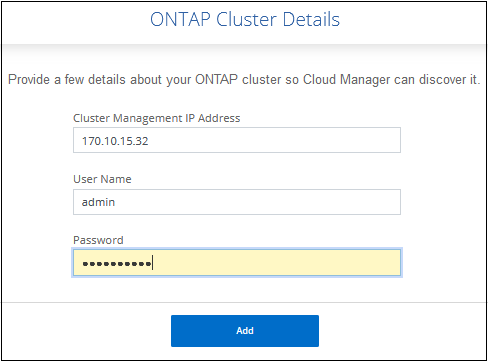

Discovering on-premises ONTAP clusters
Contributors
Cloud Manager can discover the ONTAP clusters in your on-premises environment, in a NetApp Private Storage configuration, and in the IBM Cloud. Adding on-prem clusters to the Cloud Manager Canvas enables you to manage these clusters using the same tools as your Cloud Volumes ONTAP and other cloud storage solutions.
In addition to being able to provision storage on those systems, adding these systems to Cloud Manager also makes it easy to view hardware and software contract status information in the Digital Wallet, and configure critical cloud-based services for those clusters. This includes replicating data to the cloud, backing up data to the cloud, tiering cold data to the cloud, and running compliance scans on that data.
Requirements
-
A Connector installed in a cloud provider or on your premises.
If you want to tier cold data to the cloud, then you should review requirements for the Connector based on where you plan to tier cold data.
-
The cluster management IP address and the password for the admin user account to add the cluster to Cloud Manager.
Cloud Manager discovers ONTAP clusters using HTTPS. If you use custom firewall policies, they must meet the following requirements:
-
The Connector host must allow outbound HTTPS access through port 443.
If the Connector is in the cloud, all outbound communication is allowed by the predefined security group.
-
The ONTAP cluster must allow inbound HTTPS access through port 443.
The default "mgmt" firewall policy allows inbound HTTPS access from all IP addresses. If you modified this default policy, or if you created your own firewall policy, you must associate the HTTPS protocol with that policy and enable access from the Connector host.
-
-
A valid set of NetApp Support Site credentials. See how to add the NSS account to Cloud Manager.
Viewing discovered and undiscovered on-prem clusters
You can use the Digital Wallet or the Discovery service in Cloud Manager to view, discover, and manage your on-prem ONTAP clusters that are under a support contract.
To view on-prem clusters and license details from the Digital Wallet:
-
From Cloud Manager, select the Digital Wallet service.
-
Click the On-Premises ONTAP tab.

Your ONTAP clusters are displayed with a status of whether they have been discovered in Cloud Manager.
If you are prompted to enter your NetApp Support Site (NSS) account credentials first, enter them in the Support Dashboard. After you have added the account, the clusters that are included in that account are displayed.
To view on-prem clusters and license details from the Discovery service:
-
From Cloud Manager, select the Discovery service.
-
Select the Active IQ login associated with your NSS account, if necessary.
Your ONTAP clusters that have a valid support contract are displayed with a status of whether they have been discovered in Cloud Manager.

|
If your support contract expires, the systems are removed from the Discovery page. However, you can continue to manage these systems in their working environment. See how to renew your support contract from Active IQ Digital Advisor. |
Viewing cluster information and contract details
You can use the Digital Wallet to view cluster details and hardware and software contract status.
-
In the Digital Wallet, click the On-Premises ONTAP tab.
The Software Contract and Hardware Contract expiration dates appear on the line for each cluster.
-
If the contract is close to the expiration date, or has expired, you can click the chat icon in the lower-right of Cloud Manager to request an extension to the contract.
-
For clusters that you want to know additional details, click
 to expand the cluster information.
to expand the cluster information.
Discovering on-prem clusters from Cloud Manager
You can discover on-prem ONTAP clusters in Cloud Manager from the Digital Wallet, the Discovery service, or from the Canvas. Once discovered, they are available as a working environment in Cloud Manager so that you can manage the cluster.
Discovering clusters from the Digital Wallet
You can discover your ONTAP clusters from the Digital Wallet and add them as a working environment.
-
From the Digital Wallet, click the On-Premises ONTAP tab.

-
Click Discover for the cluster that you want to manage through Cloud Manager.
-
On the Discover ONTAP Cluster page, enter the password for the admin user account and click Discover.

Note that the cluster management IP address is populated based on information from the Digital Wallet.
The status for the cluster turns to Discovered in the On-Premises ONTAP page.
Cloud Manager discovers the cluster and adds it to a working environment in the Canvas using the cluster name as the working environment name.

You can enable services for this cluster in the right panel to replicate data to and from the cluster, set up data tiering to the cloud, back up volumes to the cloud, or run compliance scans on the volumes. You can also create new volumes or launch System Manager to perform advanced tasks.
Discovering clusters from the Discovery page
You can discover your ONTAP clusters from the Discovery page and add them as a working environment.
-
From the Discovery page, click the Cluster Inventory tab.

-
Click Discover for the cluster that you want to manage through Cloud Manager.
-
On the Choose a Location page On-Premises ONTAP is pre-selected, so just click Continue.
-
On the ONTAP Cluster Details page, enter the password for the admin user account and click Add.

Note that the cluster management IP address is populated based on information from Active IQ.
-
On the Details & Credentials page the cluster name is added as the Working Environment Name, so just click Go.
Cloud Manager discovers the cluster and adds it to a working environment in the Canvas using the cluster name as the working environment name.
You can enable services for this cluster in the right panel to replicate data to and from the cluster, set up data tiering to the cloud, back up volumes to the cloud, or run compliance scans on the volumes. You can also create new volumes or launch System Manager to perform advanced tasks.
Discovering clusters from the Canvas page
You can discover your ONTAP clusters and add them as a working environment from the Canvas page. These steps can be used in cases where the cluster is not listed in the Digital Wallet or Discovery page because it currently has no support contract.
-
On the Canvas page, click Add Working Environment and select On-Premises ONTAP.
-
If you’re prompted, create a Connector.
Refer to the links above for more details.
-
On the ONTAP Cluster Details page, enter the cluster management IP address, the password for the admin user account, and click Add.
-
On the Details & Credentials page, enter a name and description for the working environment, and then click Go.
Cloud Manager discovers the cluster and adds it to a working environment in the Canvas.
You can enable services for this cluster in the right panel to replicate data to and from the cluster, set up data tiering to the cloud, back up volumes to the cloud, or run compliance scans on the volumes. You can also create new volumes or launch System Manager to perform advanced tasks.